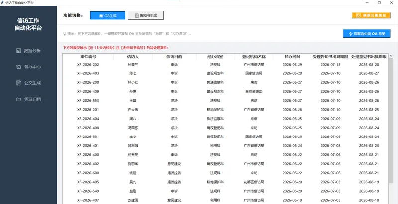
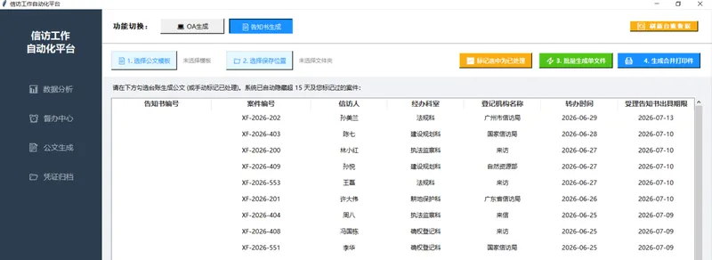

FEATURE 01
OA 拟办意见 — 智能提取
选中案件后一键弹出。系统自动完成三件事：
1. 公文标题自动拼接——根据来文类型（来信/来访/上级交办/一体化）和办结期限生成标准格式标题
2. 拟办意见模板匹配——根据登记机构类型自动选择三段式话术（上级交办 / 一体化申诉求决 / 一体化其他）并填入 {科室}{受理期限}{办结期限}{分管领导}{协管领导} 等占位符
3. 领导称谓规则引擎——骆卫国→骆总，张某某→张局，王某某→王处，自动拼接为"骆总、王处"格式。
DESIGN
话术模板配置化 — 用户可无代码修改
三段式 OA 模板存储在 OA公文话术配置.txt 文件中，使用 ini 风格分段管理。系统启动时自动读取，如果文件不存在或格式陈旧则自动用内置默认模板重建。用户可直接用记事本修改话术措辞、增减段落，无需改动任何 Python 代码。模板中的 {dept} {acc_date} {due_date} {leader_str} 占位符自动替换为实际数据。

FEATURE 02
告知书批量生成 + 合并打印
批量生成：docxtpl 引擎将案件数据渲染到标准 Word 模板，一键批量输出独立文件，以告知书编号命名。
合并打印件：将多份告知书在内存中合并为一个 Word 文档，保持原始排版。适配一键双面打印——不需要逐份打开文件。
智能过滤：自动隐藏超过 15 天的旧案件和已标记为"已处理"的案件，保证待办列表始终清爽。